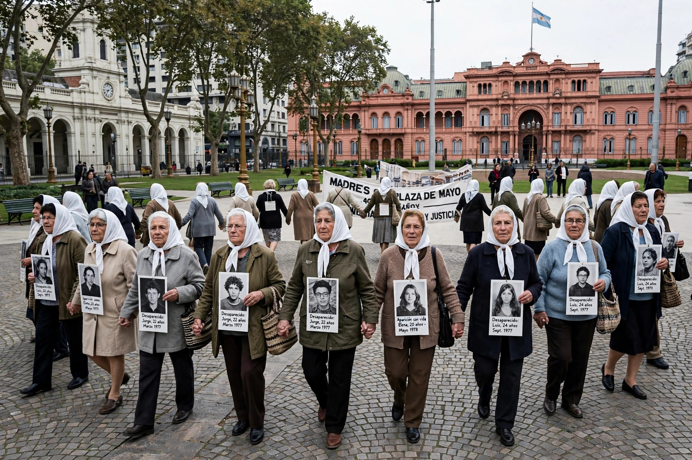

An enforced disappearance (or forced disappearance) is the secret abduction or imprisonment of a person by a state or political organisation, or by a third party with the authorisation, support, or acquiescence of a state or political organisation, followed by a refusal to acknowledge the person's fate and whereabouts, with the intent of placing the victim outside the protection of the law.

The definition above, from the International Convention for the Protection of All Persons from Enforced Disappearance (adopted by the United Nations in 2006, in force from 2010), reflects customary elements also found in the 1992 UN Declaration on the subject and in the Rome Statute, under which enforced disappearance, when committed as part of a widespread or systematic attack on a civilian population, constitutes a crime against humanity.
The practice was notoriously employed by Nazi Germany under the Nacht und Nebel ("Night and Fog") decree of 1941. It became especially associated with Latin American military governments of the 1970s and 1980s, notably in Argentina's "Dirty War", in which thousands of people were secretly detained and murdered, and in Chile under the Pinochet dictatorship. Families of the victims, such as the Mothers and Grandmothers of the Plaza de Mayo, campaigned for decades for information and accountability.
The UN Working Group on Enforced or Involuntary Disappearances, established in 1980, was the first thematic human rights mechanism of its kind. The 2006 Convention requires states parties to criminalise enforced disappearance, investigate allegations, and guarantee victims and their families rights to truth and reparation. The International Day of the Victims of Enforced Disappearances is observed on 30 August.